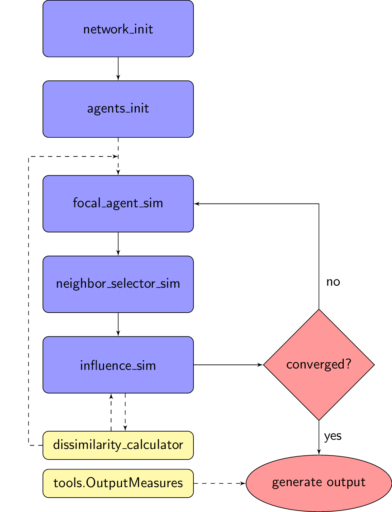

Welcome to defSim’s documentation!¶
Here you can find the API documentation for the discrete event framework for social influence models. The package is freely available on GitHub.
defSim is a package that aims to be the modular standard for social influence models. With defSim you can run a single Simulation, execute a larger Simulation Experiment, or use any number of pre-programmed modules for your own idea or variation of a traditional social influence model. By using defSim you save a lot of time programming functions that you will need in any social influence research project, but furthermore you make sure that your model remains strictly comparable with traditional models, and other models in the defSim-realm, while working completely open source by default.
The flow of a single simulation run implemented by defSim looks like this:
{kind=link}
All elements on the left represent the separate modules.
..add explanation on modules and typical workflow
I recommend to start with the Simulation class and the Experiment class to understand how to create your own multi-agent system experiment.
Here are some examples of how to create experiments:
# creating an Experiment with the default values, which recreates the classic axelrod experiment conditions
# in this example we want to try all kinds of communication regimes 1000 times
# Alternative way to import the experiment:
# from defSim import Experiment
# experiment = Experiment()
import defSim
import networkx as nx
from typing import List
from defSim import dissimilarity_calculator
experiment = defSim.Experiment(communication_regime=["one-to-one", "one-to-many", "many-to-one"], repetitions=1000)
results = experiment.run()
print(results)
#creating a Simulation
simulation = defSim.Simulation()
results = simulation.run_simulation()
print(results)
# creating a Simulation with your own influence function and running it step by step
class my_influence_function(defSim.InfluenceOperator):
@staticmethod
def spread_influence(network: nx.Graph, agent_i: int, agents_j: List[int] or int, regime: str,
dissimilarity_measure: dissimilarity_calculator, attributes: List[str]=None, **kwargs) -> bool:
# print("enter your implementation here")
pass
simulation = defSim.Simulation(influence_function=my_influence_function())
simulation.initialize_simulation()
for i in range(100):
simulation.run_simulation_step()
results = simulation.create_output_table()
# using the building blocks manually with the respective factory methods
# only the influence function is here used directly (just as an example to show how to import it, you could also use:
# defSim.InfluenceOperator.spread_influence(network, "axelrod", focal_agent,neighbors, "one-to-one", defSim.HammingDistance())
# instead of using the factory method you can alway import the classes directly from the respective module
from defSim.influence_sim.Axelrod import Axelrod # import the axelrod infuence function
network = defSim.generate_network("ring")
defSim.agents_init.initialize_attributes(network, realization="random_categorical")
calculator = defSim.dissimilarity_calculator.select_calculator("euclidean")
calculator.calculate_dissimilarity_networkwide(network)
for i in range(100):
focal_agent = defSim.focal_agent_sim.select_focal_agent(network, "random")
neighbors = defSim.neighbor_selector_sim.select_neighbors(network, "random", focal_agent, "one-to-one")
Axelrod.spread_influence(network, focal_agent, neighbors, regime="one-to-one", dissimilarity_measure=defSim.HammingDistance())
results = defSim.OutputMeasures.ClusterFinder.create_output(network, cluster_dissimilarity_threshold=.99)
print(results)
# using the building blocks manually with your own influence function
network = defSim.generate_network("ring")
defSim.agents_init.initialize_attributes(network, realization="random_categorical")
calculator = defSim.dissimilarity_calculator.select_calculator("euclidean")
calculator.calculate_dissimilarity_networkwide(network)
for i in range(100):
focal_agent = defSim.focal_agent_sim.select_focal_agent(network, "random")
neighbors = defSim.neighbor_selector_sim.select_neighbors(network, "random", focal_agent, "one-to-one")
my_influence_function.spread_influence(network, focal_agent, neighbors, regime="one-to-one",
dissimilarity_measure=defSim.HammingDistance())
results = defSim.OutputMeasures.ClusterFinder.create_output(network, cluster_dissimilarity_threshold=.99)
print(results)